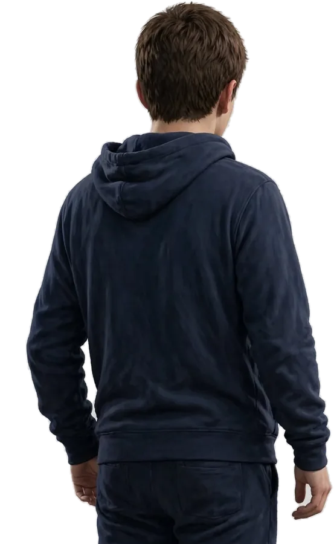

🔓 ??? — NIVEAU SECRET DÉBLOQUÉ
Le tonneau percé
« Pour bien vivre, il faut entretenir en soi-même les plus fortes passions au lieu de les réprimer. »CALLICLÈS · Platon, Gorgias

TON TONNEAU
ATTAQUE 1/6EAU : 100 % · FUITES : 2
CALLICLÈS ATTAQUE !
Quel piège Calliclès te tend-il ?